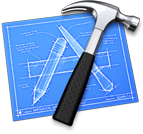
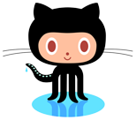

Iterative
Approach
-
The development process and progress should always be clear and transparent for customers.
How can this aim be achieved if a client is not familiar with the subtleties of programming?
For this reason, we divide the whole project into parts of the same length, which we call iterations. The average iteration takes from one to two weeks to complete. At the end of each iteration we draw our conclusions and supply a test build.
-
We constantly assess our development pace by summing up the number of completed tasks within each iteration. We compose a list of tasks for the next iteration according to this new data. Once we have the results of the iteration analysis, we fine-tune and improve our performance for the next iteration.
Typically, we get a working app prototype within the first few weeks of development. We show clients each improved prototype as each iteration is successfully completed.
Release
At the end of the final iteration we prepare and release a bug-free and stable application. Before final release we perform a general code and graphical resources clean up, we disable debug data output, and make a final check that the app meets the demands of the AppStore Review Guidelines.
Technologies
& Tools

DevelopObjective-C and CocoaTouch are our |

Write |
||
|---|---|---|---|

TrackTo track issues, we use Sifter. To work |
DistributeWe distribute test builds over |
We sometimes use the following tools, too:
SenTestingKit, ASIHTTPRequest, Kiwi, AFNetworking, CoconutKit
Need more information about how we work?
Ask now